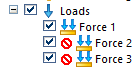
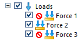

Suppress individual loads to compare results
You can evaluate the effect of individual loads and constraints on study geometry by turning them off and on. When you solve the study, the boundary conditions that are suppressed are not processed.
You also can use load cases to simulate the part undergoing all of the loading conditions in the study, but not all at the same time.
Use the following process to compare individual loads or constraints within the same study.
-
Create three loads in the same study, for example, Force 1, Force 2, Force 3.
-
In the Generative Design pane, expand the Loads node, and then use the Suppress command on the shortcut menu to suppress two of the three loads you created.
The suppressed icon indicates the loads that will not be evaluated in the results.
Example:Suppress loads Force 2 and Force 3, leaving Force 1 load active.

-
Right-click the study name and choose Generate
 .
.When processing completes, the stress results are displayed in the graphics window.
-
Now change the loads that are suppressed and unsuppressed, and solve the study again. Use the Unsuppress command on the shortcut menu of a load that is suppressed.
Example:Solve for Force 2, but suppress Force 1 and Force 3.

-
Repeat Step 4 for the third load case.
Example:Solve for Force 3, but suppress Force 1 and Force 2.